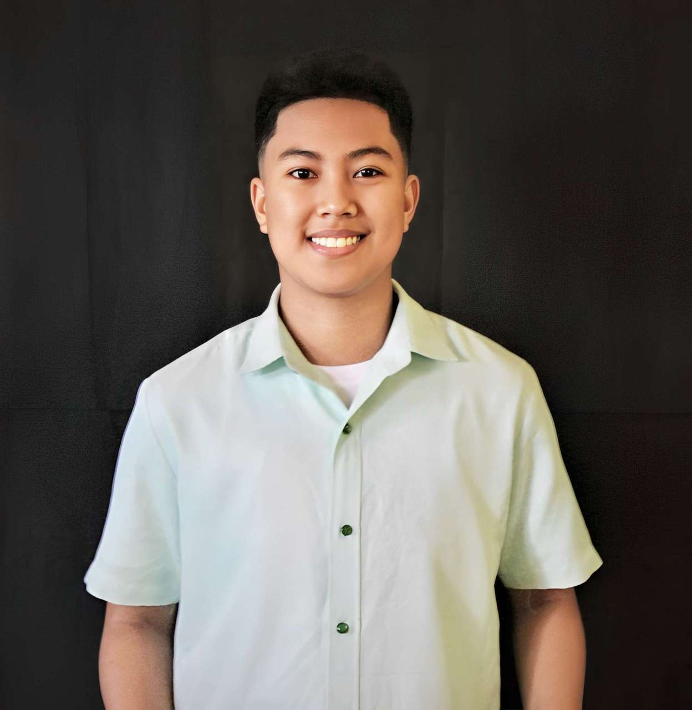

APIN, ANGELICA JULIANNA D.
Angelica Julianna Diaz-Apin was born on July 9, 2003, in Sorsogon City. She lives with her family, consisting of her parents and two sisters, in a simple and peaceful house she can call home. Since she was a child, she was seen as the strongest among her other sisters, so she was often the one who was ordered to do the chores and other tasks in their house. This was the reason why she became a very responsible and independent person. That's why she grew up to be wise and knowledgeable about the things in life.
Her life as a student began when she was only 4 years old. Her parents enrolled her in a daycare center near their home. It’s only a walking distance, so her mother, who is a housewife, can pick her up every day while her father works as a teacher. During this time, she learned how to socialize with her classmates and teacher. She was also taught to have proper manners, write, read, count, sing, dance, and many more. She believes that this is one of the most memorable and important events in her life that is worth sharing because it shows how important it is to give every child the education they need in order for them to grow.
After one year, she continued her studies in a kindergarten school. Most of her classmates were just her neighbors and playmates, so she didn't have too much trouble adjusting to make friends with them. After she finished kindergarten, her parents decided that instead of sending her to 1st grade, they would enroll her in a private school in their village to study preparatory because she was only 6 years old.
When she started studying in preparatory school, she met new classmates, so she had to adjust a little to her new environment. This time she already knows how to go to school and return home alone. Here, she also experienced the first school tour that happened in her life. She and her classmates went to Embarcadero Legazpi with their parents and teachers. Because of this, they had an unforgettable experience and a moment to remember.
After she graduated, she enrolled at Sorsogon Pilot Elementary School (SPES). During these years, she became a consistent honor student. She is always the representative of their section in poster and slogan-making contests because of her creativity. She also became a volleyball player and even participated in the "Palarong Bicol" when she was in 6th grade. During this time, she also discovered a lot of her different talents and skills.
After graduating from elementary school, she continued her studies at Sorsogon National High School (SNHS). This is where she enhanced her abilities and learned to multitask a lot of things. During her graduation, her hard work paid off, and she graduated with high honors. After graduating from high school, she studied at Sorsogon College of Criminology Inc. (SCCI) and became an academic scholar. She is now in her 2nd year of college and is still studying hard with the goal of having a job and helping her family one day.